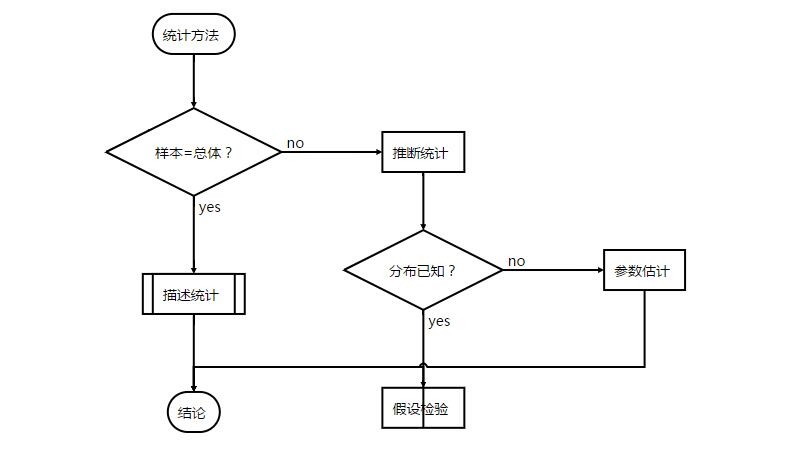

总体与样本
在前述文章中，我们讲了统计学的研究方法，并说统计学分为描述统计和推理统计。
本章我们会详细讲一下总体和样本、参数和统计量这4个基本概念，并进一步引出讲一下描述统计与推理统计的区别，以及统计学与概率论的区别。
从不确定性说起
在超智星球，统计学系列开篇的第一篇文章里，我们就讲了，统计学研究的是不确定性。
不确定的问题，就是有概率的问题。从这一点上来说，跟统计学密切相关的就是概率论。
这二者都是研究随机现象数量规律的学科。而二者的区别可以用一张图来形象体现：

也就是说，概率论是——我知道箱子里面是什么样的，我想知道我拿在手里的球是什么样的可能性分别有多大。统计学则是——我不知道箱子里面是什么样的，但是我已经知道我拿在手里的球是什么样的，我想靠我手里的球的样子去推断箱子是什么样的。
在这里边，桶里的球，可以叫做总体。手里的球，可以叫做样本(样本量为1的样本)。
总体
总体(population)是指客观存在的、在同一性质基础上结合起来的许多个别单位的整体。它通常由所研究的个体组成。例如：
- 在由多个企业构成的总体中，每一个企业就是一个个体；
- 由多个居民户构成的总体中，每一个居民户就是一个个体；
- 由多个人构成的总体中，每一个人就是一个个体。
确定总体与个体，必须注意两个方面：
- 构成总体的个体必须是同质的，不能把不同质的个体混在总体之中。例如，研究工人的工资水平，就只能将靠工资收入的职工列入统计总体的范围。同时，也只能对职工的工资收入进行考察，对职工由其他方面取得的收入就要加以排除，这样才能正确反映职工的工资水平。
- 总体与个体具有相对性，随着研究任务的改变而改变。同一个体可以是总体也可以是总体单位。例如，要了解全国工业企业职工的工资收入情况，那么全部工厂是总体，各个工厂是个体。如果旨在了解某个企业职工的工资收入情况，则该企业就成了总体，每位职工的工资就是个体了。
在明确了以上一些基本概念之后，将它们联系起来观察，深入地认识总体，可以看出，统计总体具有同质性、大量性和差异性三个主要特点。
- 同质性:同质性是指总体中的各个单位必须具有某种共同的属性或标志数值。如国有企业总体中每个企业共同标志属性是国家所有。同质性是总体的根本特征，只有个体单位是同质的，统计才能通过对个体特征的观察研究，归纳和揭示出总体的综合特征和规律性。
- 大量性:大量性是指总体中包括的总体单位有足够多的数量。总体是由许多个体在某一相同性质基础上结合起来的整体，个别或很少几个单位不能构成总体。总体的大量性，可使个别单位某些偶然因素的影响——表现在数量上的偏高、偏低的差异——相互抵消，从而显示出总体的本质和规律性。
- 差异性:差异性是指总体的各单位之间有一个或若干个可变的品质标志或数量标志，从而表现出的差异。例如，某领域的职工总体中各单位间有男、女的性别属性差异，有20岁、21岁、22岁、23岁、24岁、25岁、26岁等年龄标志数值的差异。
样本
样本(sample)是从总体中抽取的一部分元素的集合，构成样本的元素的数目称为样本量(samplesize)，也叫样本大小或样本水平。数学上来说，样本是总体的一个子集。
例如，为了解某地区10~15岁儿童血钙水平,随机选取该地区3000名10~15岁儿童并进行血钙检测,则：
- 总体为该地区所有10~15岁儿童的血钙检测值
- 样本为所选取3000名儿童的血钙检测值
- 样本量/样本大小/样本水平为3000例
样本是从总体中抽取出来的，作为总体的代表，由部分单位组成的集合体。抽取样本应注意以下几个问题： 1.样本的单位必须取自总体 2.一个总体可以抽取多个样本 3.确保样本的客观性与代表性
选取样本的过程叫做抽样，其基本要求是要保证所抽取的样品单位对全部样品具有充分的代表性。根据不同的对象，在抽样方法也有所不同。关于抽样方法、抽样大小，我们后面会会讲。
抽样的目的是根据样本提供的信息推断总体的特征。比如，从一批灯泡中随机抽取100个，这100个灯泡就构成了一个样本，然后根据这100个灯泡的平均使用寿命去推断这批灯泡的平均使用寿命。

再谈描述统计与推断统计
当我们研究一个问题时，一般说来，如何全面收集数据的特征是全面调查，获得的是总体的全面统计数据，那么运用描述统计方法那就是认识总体的目的。
如果总体包含的各个数据十分庞大，进行这样的全面调查要耗费的人力、物力和财力时间不经济不实际，这时可以抽样统计，获得的样本信息，采取的方法是从样本中推断总体，这便是推断统计要解决的问题。
两部分的核心区别就在于我们所观测的样本是否等于总体。
样本=总体，那么使用描述统计就能够用来描述我们所研究的现象。 样本≠总体，那么使用推断统计才能较为准确地描述我们所研究的现象。
推断统计也要收集数据，并进行必要的加工方法处理。描述统计方法是整个统计学的基础。统计学的这两个分支结构常常交叉在一起运用，并没有绝对孤立的。逐渐发展相互统一的关系。
事实上，近年来火热的大数据就是因为技术（传感器等）发展，我们足够获取可以近似等于全样本甚至全样本的数据而不是以往的样本数据所引起的一场变革，也就是说是由数据驱动的变革。

参考资料
- 张湘平, 张金槐, 谢红卫. 关于样本容量、验前信息与Bayes决策风险的若干讨论[J]. 电子学报, 2003, 31(4):536-538.
- [美]科时．抽样调查．北京：中国统计出版社，1997：25
- 储全滋. 抽样方法. 三民书局, 1993.
- 贾俊平、何晓群、金勇．统计学（第四版）：中国人民大学出版社，2009年：7
- 王梓坤. 概率论基础及其应用[M]. 北京师范大学出版社, 2007.
- 吴杨 陈兆荣．统计学．合肥：安徽大学出版社，2013：13
- 佚名. 总体与样本[J]. 检验医学与临床, 2017(19):2093-2093.